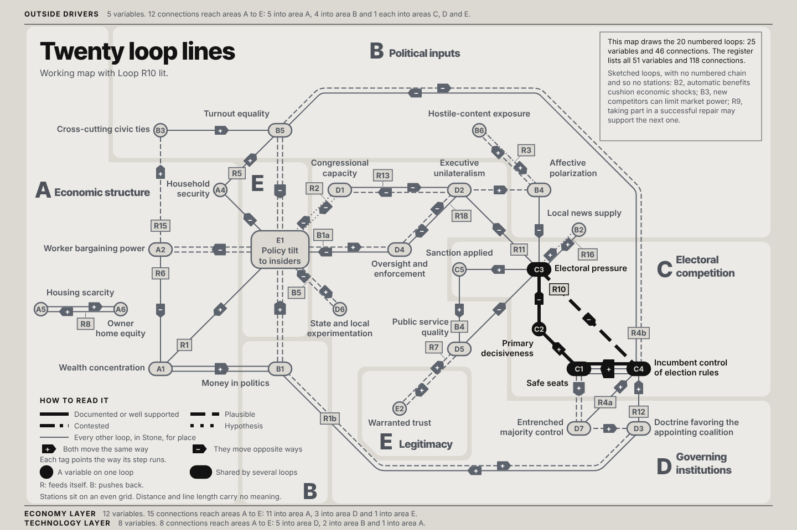

Open the map at full size, 1440 by 960 px, to zoom in.

The lines in words
| Line | Kind | Stations in order | Areas |
|---|---|---|---|
| LoopR1 | Reinforcing: feeds itself | Wealth concentration (A1) +→ Money in politics (B1) +→ Policy tilt to insiders (E1) +→ Wealth concentration (A1) | A, B and E |
| LoopR1b | Reinforcing: feeds itself | Money in politics (B1) +→ Doctrine favoring the appointing coalition (D3) +→ Money in politics (B1) | B and D |
| LoopR2 | Reinforcing: feeds itself | Congressional capacity (D1) −→ Policy tilt to insiders (E1) −→ Congressional capacity (D1) | D and E |
| LoopR3 | Reinforcing: feeds itself | Affective polarization (B4) +→ Hostile-content exposure (B6) +→ Affective polarization (B4) | B |
| LoopR4a | Reinforcing: feeds itself | Incumbent control of election rules (C4) +→ Safe seats (C1) +→ Entrenched majority control (D7) +→ Incumbent control of election rules (C4) | C and D |
| LoopR4b | Reinforcing: feeds itself | Incumbent control of election rules (C4) −→ Turnout equality (B5) −→ Incumbent control of election rules (C4) | B and C |
| LoopR5 | Reinforcing: feeds itself | Household security (A4) +→ Turnout equality (B5) −→ Policy tilt to insiders (E1) −→ Household security (A4) | A, B and E |
| LoopR6 | Reinforcing: feeds itself | Worker bargaining power (A2) −→ Wealth concentration (A1) +→ Money in politics (B1) +→ Policy tilt to insiders (E1) −→ Worker bargaining power (A2) | A, B and E |
| LoopR7 | Reinforcing: feeds itself | Public service quality (D5) +→ Warranted trust (E2) +→ Public service quality (D5) | D and E |
| LoopR8 | Reinforcing: feeds itself | Housing scarcity (A5) +→ Owner home equity (A6) +→ Housing scarcity (A5) | A |
| LoopR10 | Reinforcing: feeds itself | Safe seats (C1) +→ Primary decisiveness (C2) −→ Electoral pressure (C3) −→ Incumbent control of election rules (C4) +→ Safe seats (C1) | C |
| LoopR11 | Reinforcing: feeds itself | Affective polarization (B4) −→ Electoral pressure (C3) −→ Executive unilateralism (D2) +→ Affective polarization (B4) | B, C and D |
| LoopR12 | Reinforcing: feeds itself | Doctrine favoring the appointing coalition (D3) +→ Incumbent control of election rules (C4) +→ Safe seats (C1) +→ Entrenched majority control (D7) +→ Doctrine favoring the appointing coalition (D3) | C and D |
| LoopR13 | Reinforcing: feeds itself | Congressional capacity (D1) −→ Executive unilateralism (D2) −→ Congressional capacity (D1) | D |
| LoopR15 | Reinforcing: feeds itself | Worker bargaining power (A2) +→ Cross-cutting civic ties (B3) +→ Turnout equality (B5) −→ Policy tilt to insiders (E1) −→ Worker bargaining power (A2) | A, B and E |
| LoopR16 | Reinforcing: feeds itself | Local news supply (B2) +→ Electoral pressure (C3) +→ Local news supply (B2) | B and C |
| LoopR18 | Reinforcing: feeds itself | Executive unilateralism (D2) −→ Oversight and enforcement (D4) −→ Executive unilateralism (D2) | D |
| LoopB1a | Balancing: pushes back | Policy tilt to insiders (E1) +→ Oversight and enforcement (D4) −→ Policy tilt to insiders (E1) | D and E |
| LoopB4 | Balancing: pushes back | Public service quality (D5) −→ Electoral pressure (C3) +→ Sanction applied (C5) +→ Public service quality (D5) | C and D |
| LoopB5 | Balancing: pushes back | Policy tilt to insiders (E1) +→ State and local experimentation (D6) −→ Policy tilt to insiders (E1) | D and E |
Text version of the poster: every line, its stations in order and the sign of each step. A plus means both variables move the same way; a minus means they move opposite ways.
LoopR1 Reinforcing: feeds itself. Areas A, B and E.
Wealth concentration (A1) +→ Money in politics (B1) +→ Policy tilt to insiders (E1) +→ Wealth concentration (A1)
LoopR1b Reinforcing: feeds itself. Areas B and D.
Money in politics (B1) +→ Doctrine favoring the appointing coalition (D3) +→ Money in politics (B1)
LoopR2 Reinforcing: feeds itself. Areas D and E.
Congressional capacity (D1) −→ Policy tilt to insiders (E1) −→ Congressional capacity (D1)
LoopR3 Reinforcing: feeds itself. Areas B.
Affective polarization (B4) +→ Hostile-content exposure (B6) +→ Affective polarization (B4)
LoopR4a Reinforcing: feeds itself. Areas C and D.
Incumbent control of election rules (C4) +→ Safe seats (C1) +→ Entrenched majority control (D7) +→ Incumbent control of election rules (C4)
LoopR4b Reinforcing: feeds itself. Areas B and C.
Incumbent control of election rules (C4) −→ Turnout equality (B5) −→ Incumbent control of election rules (C4)
LoopR5 Reinforcing: feeds itself. Areas A, B and E.
Household security (A4) +→ Turnout equality (B5) −→ Policy tilt to insiders (E1) −→ Household security (A4)
LoopR6 Reinforcing: feeds itself. Areas A, B and E.
Worker bargaining power (A2) −→ Wealth concentration (A1) +→ Money in politics (B1) +→ Policy tilt to insiders (E1) −→ Worker bargaining power (A2)
LoopR7 Reinforcing: feeds itself. Areas D and E.
Public service quality (D5) +→ Warranted trust (E2) +→ Public service quality (D5)
LoopR8 Reinforcing: feeds itself. Areas A.
Housing scarcity (A5) +→ Owner home equity (A6) +→ Housing scarcity (A5)
LoopR10 Reinforcing: feeds itself. Areas C.
Safe seats (C1) +→ Primary decisiveness (C2) −→ Electoral pressure (C3) −→ Incumbent control of election rules (C4) +→ Safe seats (C1)
LoopR11 Reinforcing: feeds itself. Areas B, C and D.
Affective polarization (B4) −→ Electoral pressure (C3) −→ Executive unilateralism (D2) +→ Affective polarization (B4)
LoopR12 Reinforcing: feeds itself. Areas C and D.
Doctrine favoring the appointing coalition (D3) +→ Incumbent control of election rules (C4) +→ Safe seats (C1) +→ Entrenched majority control (D7) +→ Doctrine favoring the appointing coalition (D3)
LoopR13 Reinforcing: feeds itself. Areas D.
Congressional capacity (D1) −→ Executive unilateralism (D2) −→ Congressional capacity (D1)
LoopR15 Reinforcing: feeds itself. Areas A, B and E.
Worker bargaining power (A2) +→ Cross-cutting civic ties (B3) +→ Turnout equality (B5) −→ Policy tilt to insiders (E1) −→ Worker bargaining power (A2)
LoopR16 Reinforcing: feeds itself. Areas B and C.
Local news supply (B2) +→ Electoral pressure (C3) +→ Local news supply (B2)
LoopR18 Reinforcing: feeds itself. Areas D.
Executive unilateralism (D2) −→ Oversight and enforcement (D4) −→ Executive unilateralism (D2)
LoopB1a Balancing: pushes back. Areas D and E.
Policy tilt to insiders (E1) +→ Oversight and enforcement (D4) −→ Policy tilt to insiders (E1)
LoopB4 Balancing: pushes back. Areas C and D.
Public service quality (D5) −→ Electoral pressure (C3) +→ Sanction applied (C5) +→ Public service quality (D5)
LoopB5 Balancing: pushes back. Areas D and E.
Policy tilt to insiders (E1) +→ State and local experimentation (D6) −→ Policy tilt to insiders (E1)
Source: Who Do They Answer To? Systems Atlas V7, snapshot October 15, 2026. Drawn by script from the V7 model; every mark is checked against V7.